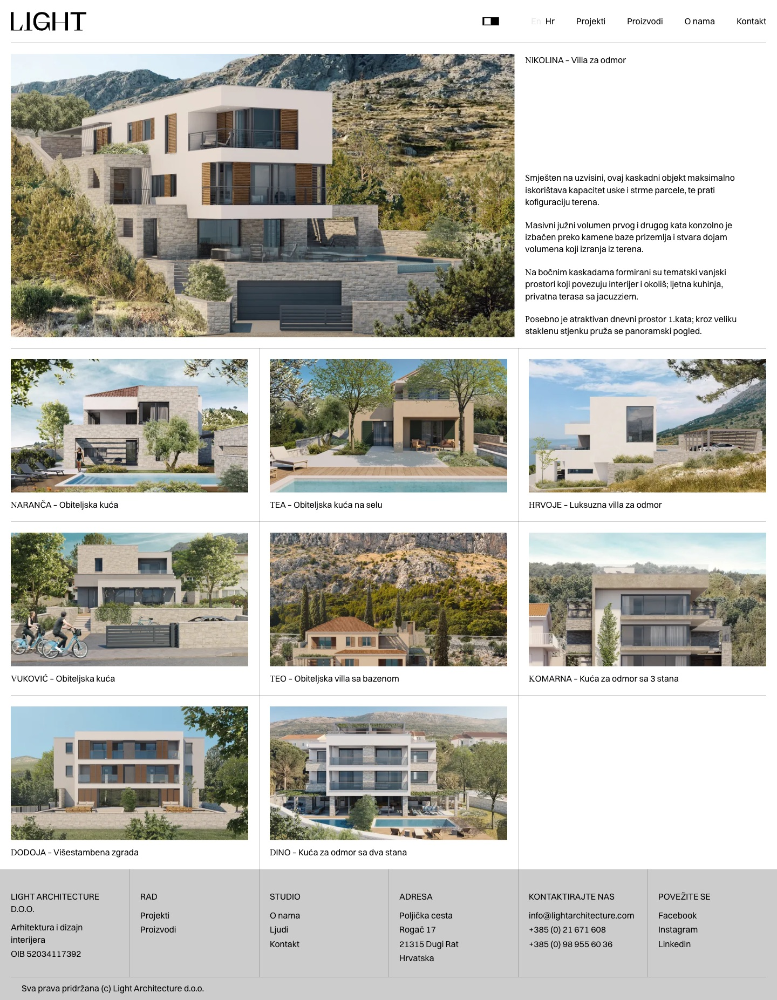
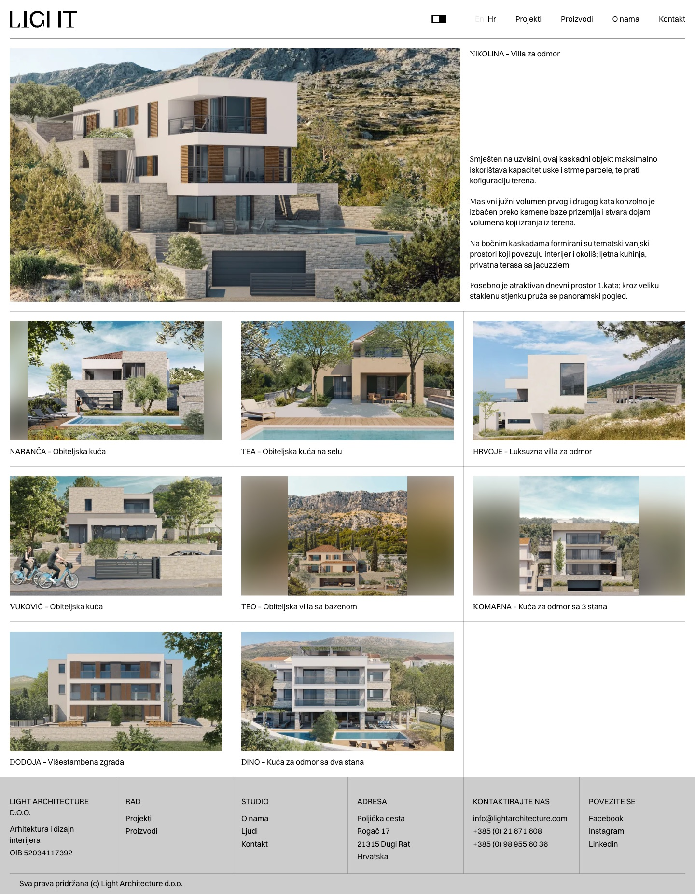
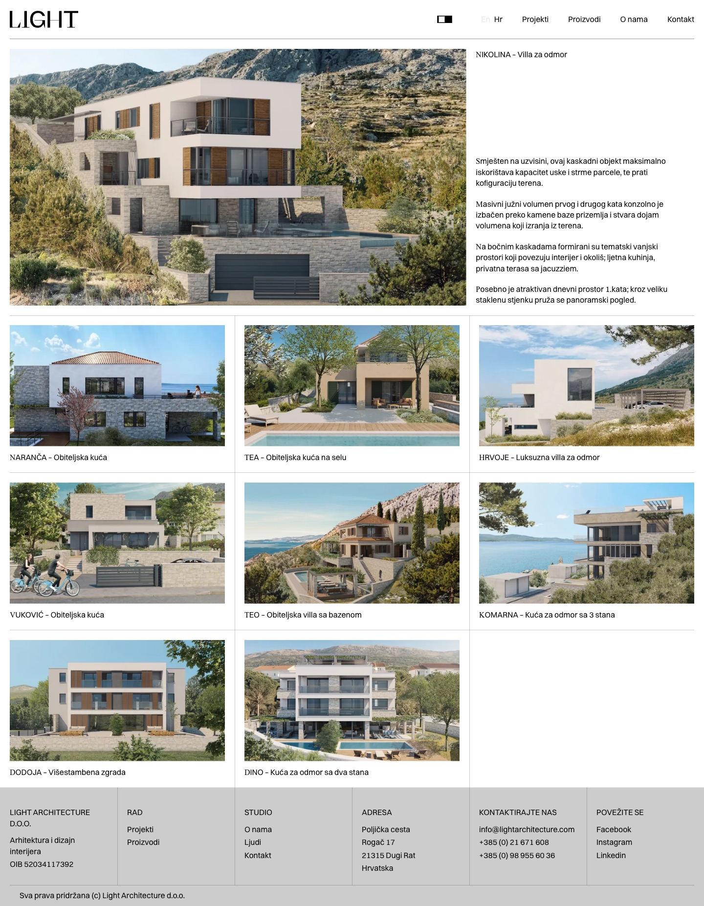
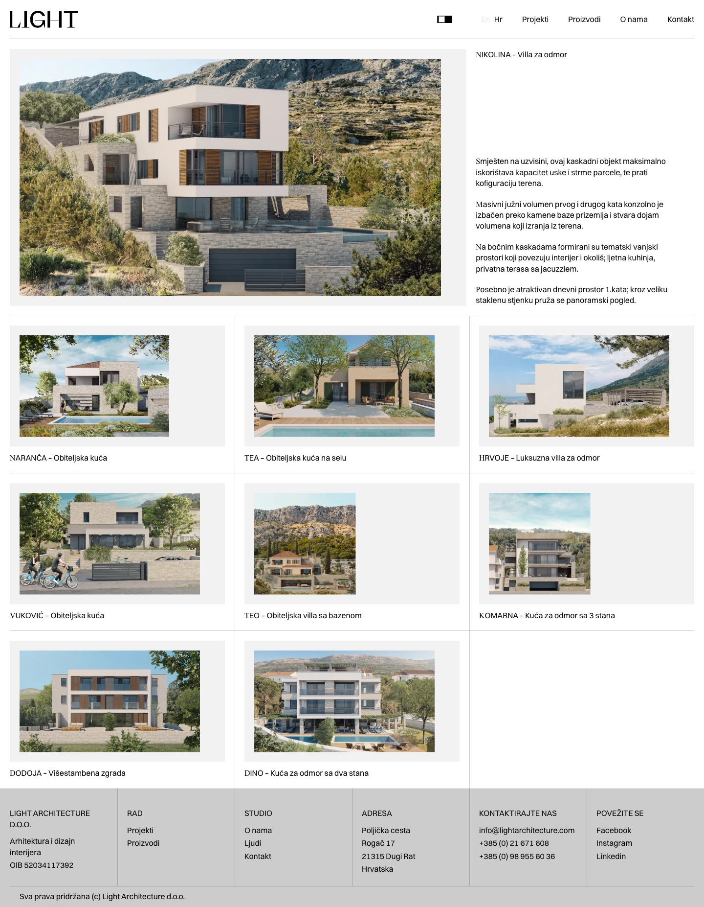

Naslovna: cijele slike u mreži projekata
Na naslovnoj su sve slike projekata trenutno izrezane na omjer 16:9. Ovdje je šest načina da se slika prikaže cijela, a da mreža ostane ista. Svaka snimka prikazuje cijelu naslovnu stranicu na širini od 1440 px, u svijetloj temi. Za usporedbu je prva trenutna verzija.
Trenutno: rez na 16:9
Svaka slika je izrezana tako da ispuni okvir 16:9. Kod projekata Naranča (3:2), Teo i Komarna (kvadratne slike) dio slike je odrezan; ostalih šest već je u omjeru 16:9.

Uklapanje u okvir
Okvir 16:9 ostaje, a cijela slika se uklapa u njega, centrirana. Prazan prostor oko slike je boja pozadine stranice.

Paspartu
Okvir 16:9 postaje svijetlosivi paspartu s rubom od 20 px, a cijela slika stoji centrirana unutar njega. Paspartu imaju sve slike, pa okviri djeluju ujednačeno.

Prirodna visina
Bez fiksnog okvira: svaka slika zadržava svoj omjer. Najviša slika određuje visinu reda, a slike i naslovi poravnati su uz dno reda. Okomite i vodoravne linije mreže ostaju na mjestu.

Zamućena pozadina
Cijela slika stoji centrirana u okviru 16:9, a prazne strane popunjava zamućena, uvećana kopija iste slike. Ne učitava se nijedna dodatna datoteka.

Naslovna slika 16:9
Raspored se ne mijenja. Naslovna slika svakog projekta postaje njegov prvi render u omjeru 16:9, pa ništa ne treba rezati: Naranča, Teo i Komarna prelaze na svoj drugi render. Buduće slike koje nisu 16:9 i dalje bi se rezale.

Paspartu, slika lijevo
Isto kao opcija 2, ali je slika poravnata uz lijevi rub paspartua umjesto po sredini, pa joj se lijevi rub poklapa s naslovom ispod.
